Newton vs Leibniz: The Calculus War Classrooms Never Teach
Group: Maggi Kari Da Best
Authors: Cher Ming Sian, Gan Ruoxian, Xie Wanyan

[Your main content goes here…]
1 Newton vs Leibniz: The calculus war classrooms never teach
If you had to pick the biggest copyright fight in the history of mathematics, it wouldn’t be some boring plagiarism story.
It would be :
Who is the mother of calculus?
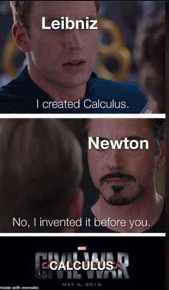
Newton said,
“Eh I wrote the code years ago. It is inside my notebook, i can prove it. You’re just running on my backend.”
Leibniz replied,
“Please lah, im the first to make it public. And i even desigened the UI”
Neither side would give in.
Before long, the whole European math community split into two camps.
Team Newton.
Team Leibniz.
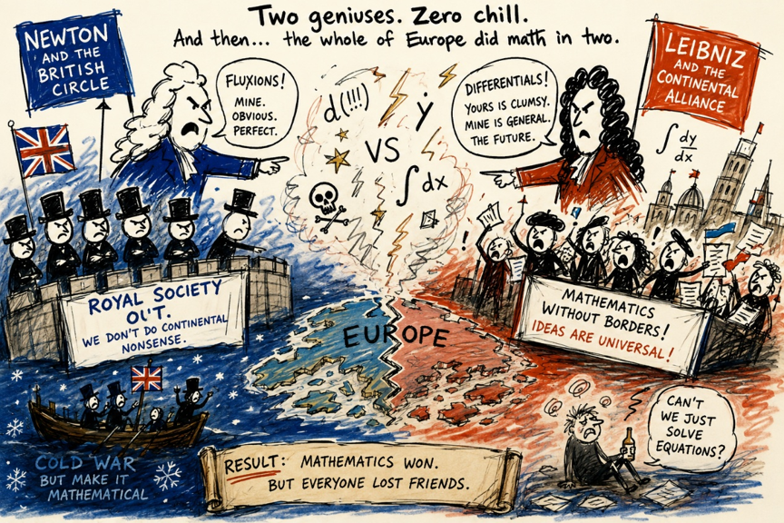
British mathematicians even left the “group chat”. To support Newton, they basically gave Europe the academic cold shoulder.
Before the two final bosses enter the arena and start their legendary math beef, we need to ask a simple question:
Why did 17th-century humans feel the urgent to invent Calculus? What kind of bugs were they trying to fix?
2 Chapter 1: Looking Up for Answers…
The biggest difference between people back then and people nowadays comes down to what occupies our minds,
People today: “Later eat what? Mcd or Chicken Rice”
People in the 17th century: “How exactly did God design the universe?”
Back then, religion in Europe was a super big deal. Most scientists last time truly believed that the universe was not some random accident happen one.
Instead, they thought God was the ultimate architect who carefully designed everything
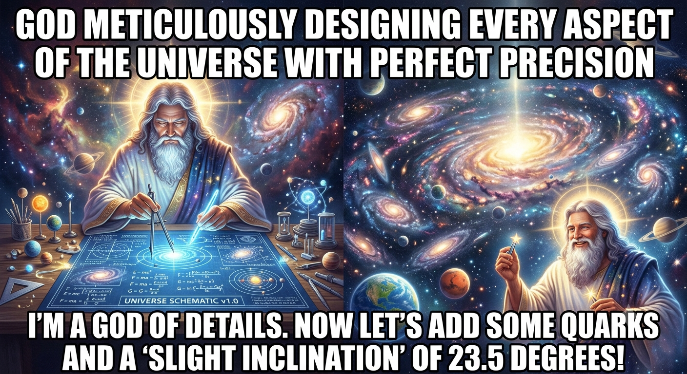
Those scientists last time all had one ultimate endgame quest, like the final boss level in a game.They looked up and wondered:
Why don’t planets just randomly fly off into deep space? Like, why they don’t simply escape and disappear?
Why is the Moon always “sims” behind the Earth? Always following us everywhere like a loyal sidekick, never leaving our side.
And why do planets orbit the Sun with what looks like suspiciously perfect stability? So steady, no crashing, no drifting. Everything perfectly on track, like a flawless train schedule.
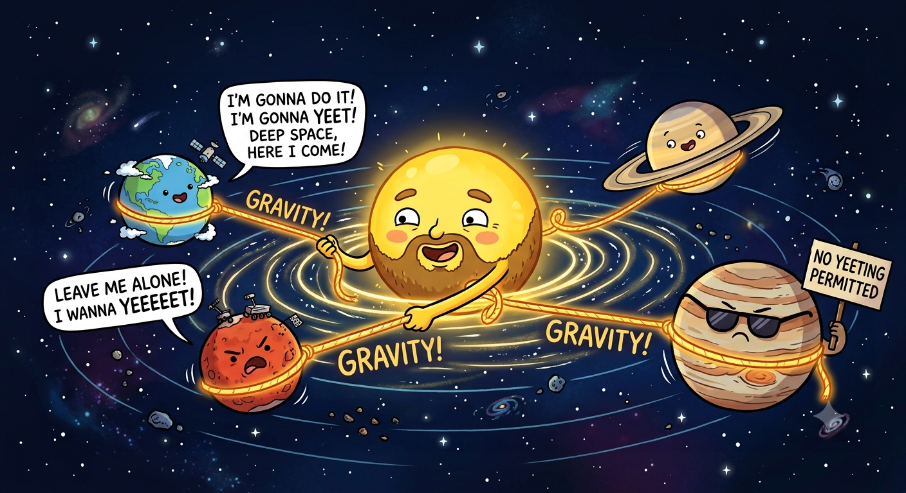
If you could answer these questions, Yay ! —you had cracked the source code of the universe.
At that time, many scientists were also super religious, got heavy background one. So studying nature wasn’t just boring science only. It was basically trying to sneak a peek into God’s dev tools and source code without getting a permanent ban from the server.
And whoever managed to crack that system first wasn’t just a normal scientist anymore. They auto promoted to become the ultimate reality hackers—basically the Big Boss system administrators of physics itself.
But the problem is, if you want to crack a source code, you need a proper test file to run experiments on. You cannot simply test on the live server, later server crash.
Luckily for them, they didn’t have to look very far or find trouble. They just looked up at the night sky and found a massive dataset already running flawlessly in production which is the planetary motion.
3 Chapter 2: The Ultimate Boss fight…
That’s when one of the biggest architecture debates in early science broke out.
Was the universe running on an Earth-centered model? Or a Sun-centered model?
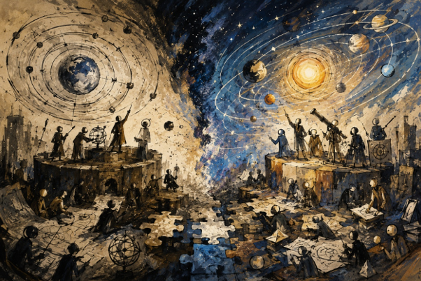
In other words, was Earth the center of the entire system, or just another local node orbiting a much larger compute unit?
Back then, the fellas supporting the Sun-centered model were basically getting roasted every single day—and I mean literal roasting.
Case in point: an Italian philosopher and mathematician named Giordano Bruno. This guy was literally “roasted” alive at the stake in Rome’s market square. Why? Just because he took the Sun-centered idea and used it to aggressively troll the religious establishment.
The Earth-centered model had been patched and maintained by generations of legacy scholars for over a thousand years. Even though it sucked with crazy bloated code, it still ran…… more or less, acceptable lah.
On the other hand, the Sun-centered model looked like a much cleaner, more elegant architecture. But there was a catch: you had to prove it with reliable evidence.
You had to take your new system and accurately predict exactly where a planet would be next.
Under this brutal test dataset, the scientific world did not believe in tears, and they didn’t give a fxxk about a beautiful Canva presentation. What mattered was the real output.
If you could accurately predict where a planet would be in the next moment, you were the strongest person on Earth, the ultimate big boss of science.
But if you couldn’t, then no matter how beautifully you presented the Sun-centered model, it was still just unoptimized hype,all sembang only, no substance.
4 Chapter 3: Enter Kepler: The Ultimate Grind Machine…
Just when everyone was getting completely burned out and exhausted by these brutal benchmark tests, a German astronomer named Kepler stepped into the chat.

He was the ultimate grind machine of science—the kind of hardcore developer who doesn’t sleep, doesn’t rest, and can spend six straight years obsessing over something as chaotic as Mars’ orbit.
By filling thousands of pages of scratch paper, he managed to push the new architecture forward in a critical way.
He eventually formulated the famous laws of planetary motion. His second law basically stated this: planets sweep out equal areas in equal amounts of time.
Suddenly, those supporting the Sun-centered model felt like the sun had finally come out, got hope already. The core logic worked; the architecture held.
But just as mathematicians excitedly spread out their papers, ready to turn this into a clean predictive formula, the room collectively hit a “smile to soul-exit” like senyum tapi jiwa dah terbang moment.
Wait, what? The orbit… is an ellipse?
This irregular, curved shape… where exactly is the formula supposed to come from?
Because mathematical tools at the time were severely underdeveloped, a whole pile of long-standing legacy bugs started flooding everyone’s To-Do list:
1.Find out why planets move in ellipses
2.Invent new math branches (Develop Calculus)
3.To Crack “Kepler Equation”
4.The Multi-Body Problem
…..
Back then, the table of contents of a thick geometry textbook was basically what drove countless brilliant minds to exhaustion—a “10,000 Whys” problem set in disguise.
It wasn’t that people weren’t smart enough. It was simply that they didn’t have the right programming tools to work with.
Geometry and algebra at the time were mostly static systems, while the world they were trying to describe was full of dynamic, real-time change.
Trying to handle that with existing tools was like using a plastic toy shovel to dig the Mariana Trench. Cannot lah, the tools were totally not built for the job.
So, the entire European scientific community got stuck in place, collectively screaming for a god-tier productivity tool that could finally handle change over time.
5 Chapter 4 : Gotong-Royong Mode Activated…
In an era when even calculators didn’t exist, the idea that a single lone genius could suddenly “have a flash of insight” and save the world was simply unrealistic.
Faced with this universe-level bug that had effectively caused everyone to jam and stop moving, the entire European mathematical community quietly formed a massive, decades-long “grind squad” and started brute-forcing the problem.
Since doing it solo wasn’t working, the top “hackers” of Europe naturally shifted into an open-source collaboration mode.
Everyone took on different tasks, frantically contributing modules to the shared codebase, trying to build this god-tier tool through pure crowd power and gotong royong spirit.
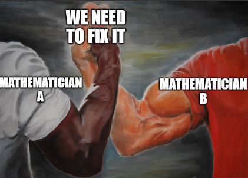
Fermat focused on one direction and essentially extracted the “tangent module” by force.
Descartes rebuilt the foundation layer and shipped analytic geometry as a core system upgrade, like a major OS update.
Kepler and Cavalieri acted as frontline stress testers, pushing hard against the concept of infinitesimals—basically trying to break the system to see how small the data could go.
Barrow and Wallis kept pushing continuous contributions and iterative patches, non-stop updating the repo.
It was like everyone was jointly assembling an enormous, impossible jigsaw puzzle.
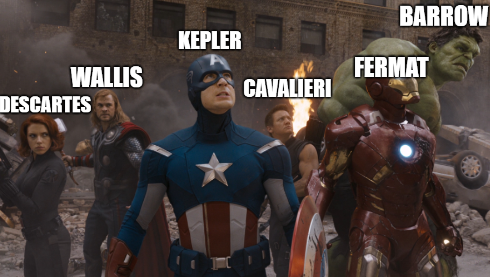
By the mid-17th century, everyone rubbed their red, sleep-deprived eyes and suddenly realized in shock.
Eh, wow! The puzzle was already about 99% complete.
Everything was in place. The isolated algorithm modules were already built. All that was missing was the final step, integrating everything into a unified calculus framework.
And the next two characters to enter the chat would each, in their own genius and rivalry-driven way, finally commit the last one percent of the code.
They were
Isaac Newton,

the backend overlord of England’s academic world,
and Gottfried Wilhelm Leibniz,
the full stack frontend genius from Germany.
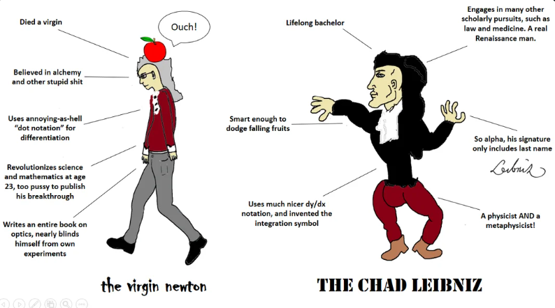
6 Chapter 5 : Quiet Genius, Dusty Drawer…
In the hot, tense summer of 1665, a super devastating guest arrived on the shores of England.
The Great Plague was sweeping through London, turning bustling streets into ghost towns marked with red crosses.
Seeking safety, Cambridge University decided to tutup kedai temporarily, they packed up the faculty and sent all the students packing.
Among those fleeing the contagion was a quiet, slightly eccentric 22-year-old student. While most of his friends treated this forced hiatus as an unexpected long holiday—or a miserable pause on their futures—this young guy just packed his notebooks, headed back to his family’s isolated manor at Woolsthorpe, and casually embarked on what would become the most ridiculously productive gap year in human history.
His name was Isaac Newton.
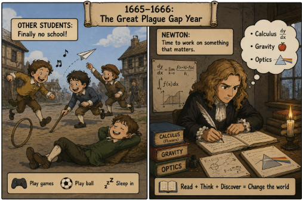
Newton viewed quantities as continuously flowing. He called a changing quantity a Fluent, and its rate of change a Fluxion.
As you can see, he had already built most of the foundations of calculus during his WFH quarantine. But Newton had one fatal flaw that makes zero sense to us nowadays: He absolutely hated publishing.
After finishing his master-level work, he didn’t post it online or share it with the community. He simply locked the manuscripts deep inside a drawer = moved on to other research.
7 Chapter 6 : An Elegant UI…
While Newton’s manuscripts were still sitting quietly inside his drawer collecting dust, a German mathematician named Gottfried Wilhelm Leibniz suddenly appeared in the chat.
At the time, he dunno that Newton had already developed a similar method, so he completely independently worked it out himself from scratch.
Most importantly, Leibniz didn’t play hide-and-seek like Newton. He not only developed calculus independently, but also published his work immediately for the whole world to see.
He also introduced a super elegant notation system that looked like this:
\[\frac{dy}{dx}\qquad \qquad \int\]These symbols are still used throughout the world today. The exact same ones you see in Liu Jie class.
You could say that history experienced a giant Git conflict: two great mathematicians from different countries submitted their own calculus projects almost simultaneously.
Newton wrote the hardcore backend core engine, while Leibniz independently built another implementation and designed the beautiful UI and clean syntax that mathematics classrooms around the world still use today.
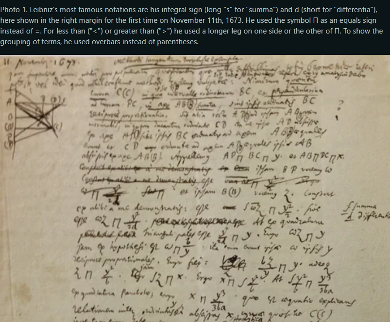
8 Chapter 7 : Investigate Urself and Winning 100%…
Decades passed before Newton suddenly blinked, looked up from his experiments, and realized:
“Wait… apasal does everyone in Europe think Leibniz invented calculus?”
The British mathematical community instantly rallied behind their hometown hero, fiercely whispering,
“Leibniz must have snuck a peek at Newton’s secret manuscripts! He’s a plagiarist!”
The German side fired back with equal venom:
“He discovered it completely independently! Your guy kept his math in a drawer; you don’t get to claim the crown now! Siapa cepat siapa dapat!”
The mudslinging escalated until it threatened to tear European science apart. To stop the drama, the Royal Society of London stepped in. They promised to run a fair, official investigation to see who actually invented calculus first.
They assembled an elite committee to meticulously “examine the sincerity of the Originals and compare the Copies therewith.” They promised a fair trial based purely on the historical timeline.
But there was one hilarious and unbelievable problem.
The leader of the Royal Society—the big boss who picked the committee members and secretly wrote the final report—was none other than Isaac Newton himself.
Yes, you read that right! Newton acted as the judge, the jury, and the witness all at the same time. It is the most famous case in history of “investigating yourself.”
Of course, after a “careful” review, Newton’s committee decided that Isaac Newton was the true winner and the only inventor of calculus. The rest of Europe could only stare in shock at this totally unfair trial.
So, who really won?
Today, history experts agree that both men were geniuses who figured out calculus completely on their own. Newton did it first in secret, but Leibniz was the one who actually shared it with the world.
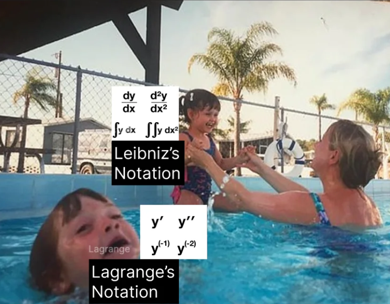
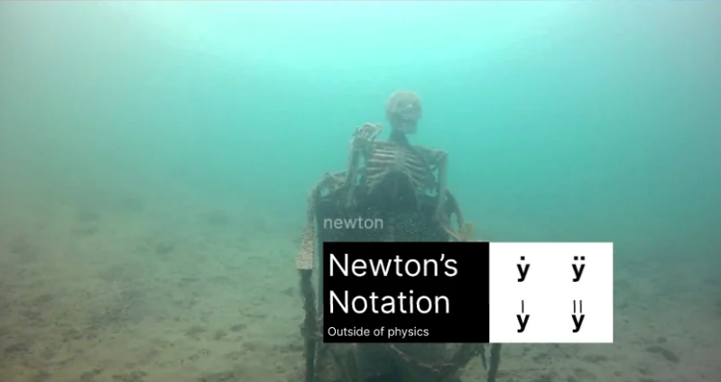
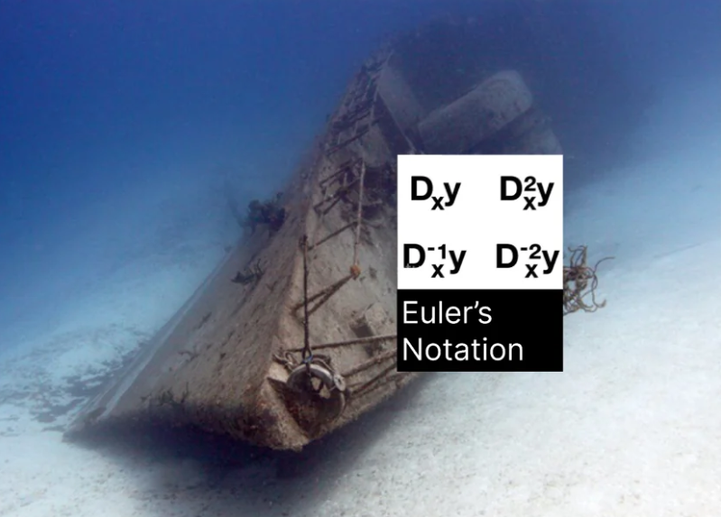
9 Chapter 8 : Now You See Me, Now You Dont…
Even though calculus was finally out in the open, mathematicians soon realized something was wrong. There was a major bug in the system
.When finding a derivative, you had to use tiny, near-zero numbers called infinitesimals :
\[\Delta x\]
At the start of the math problem, these tiny numbers could not be zero, because you cannot divide by zero, the system auto crash if do like this.
But mysteriously, by the end of the problem, those same numbers just seemed to disappear into thin air.
An Irish philosopher and bishop named George Berkeley stepped forward and looked at the math. He asked a few simple, devastating questions:
“Is \(\Delta x\) actually zero? If it isn’t zero, why does it disappear? If it is zero, how can you divide by it?”
Berkeley famously mocked these vanishing numbers, calling them the “Ghosts of departed quantities.”
The mathematical community fell completely silent. No one had a good answer. This officially started the Second Crisis in the Foundations of Mathematics.
Everyone realized that while calculus gave the correct answer, the underlying code lacked a solid, logical foundation. It worked by luck, but the compiler shouldn’t have allowed it.
Indefinedally, the next generation of mathematicians would step up to fix this bug. They would finally make calculus safe and logical using a new concept limits .
10 Chapter 9 : The Limits Era…
For a long time, nobody knew how to fix Bishop Berkeley’s ghost bug.
The foundations of calculus were completely broken, and mathematicians were just crossing their fingers, and hoping their equations wouldn’t collapse into a pile of syntax errors. Solo attempts to solve the mystery just weren’t working.
Eventually, the top math “hackers” of Europe naturally shifted into that classic open-source collaboration mode once again.
Everyone took on different tasks, frantically contributing modules to the shared codebase, trying to build a god-tier logical tool through pure crowd power.
They realized they finally needed to work together instead of gatekeeping their notes.
Brilliant minds like Augustin-Louis Cauchy and Karl Weierstrass stepped up to the keyboard. They looked at the messy code and decided to throw away the confusing idea of “ghost numbers” entirely.
Instead of asking what happens when \(\Delta x\) becomes zero, they asked: What happens as \(\Delta x\) gets closer and closer to zero, without ever actually touching it?
With this single, genius pivot, they created the formal, bulletproof definition of limits.
By working together and combining their massive braincells, the open-source mathematical community successfully patched the universe-level bug.
They gave calculus the rock-solid, logical foundation it always deserved, turning Newton and Leibniz’s wild, experimental ideas into the most stable and powerful tool in modern science.
11 Outro : The Final Merge
Today, the calculus we learn in class looks like just another thick, heavy textbook, kinda that makes you want to cry when you look at the syllabus.
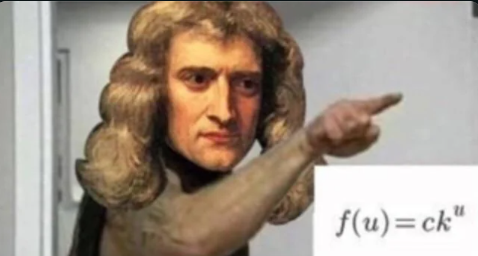
But it is actually the culmination of more than three hundred years of relentless, non-stop effort by countless mathematicians, physicists, and astronomers.
It wasn’t the result of Newton having a sudden, magical stroke of genius one day while sitting under an apple tree
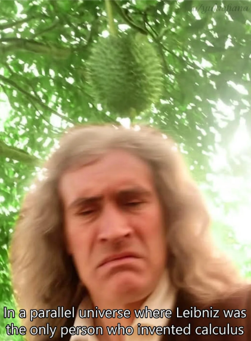
, nor was it the work of Leibniz alone.
It was a magnificent, epic relay race run by generations of scientists. Newton and Leibniz simply stood on the shoulders of all the giants before them to take that final, monumental step and hit the Merge button.
Because of calculus, humanity possessed for the very first time a precise language to describe motion, change, and the laws of nature.
Because of calculus, humanity possessed for the very first time a precise language to describe motion, change, and the absolute laws of nature. From the elliptical orbits of planets to the launch of rockets; from electromagnetic fields to the complex optimization algorithms behind modern Artificial Intelligence, almost all of modern science is completely inseparable from calculus.
Bak kata pepatah:
“If mathematics is a language, then calculus is humanity’s very first grammar book for reading the universe.”